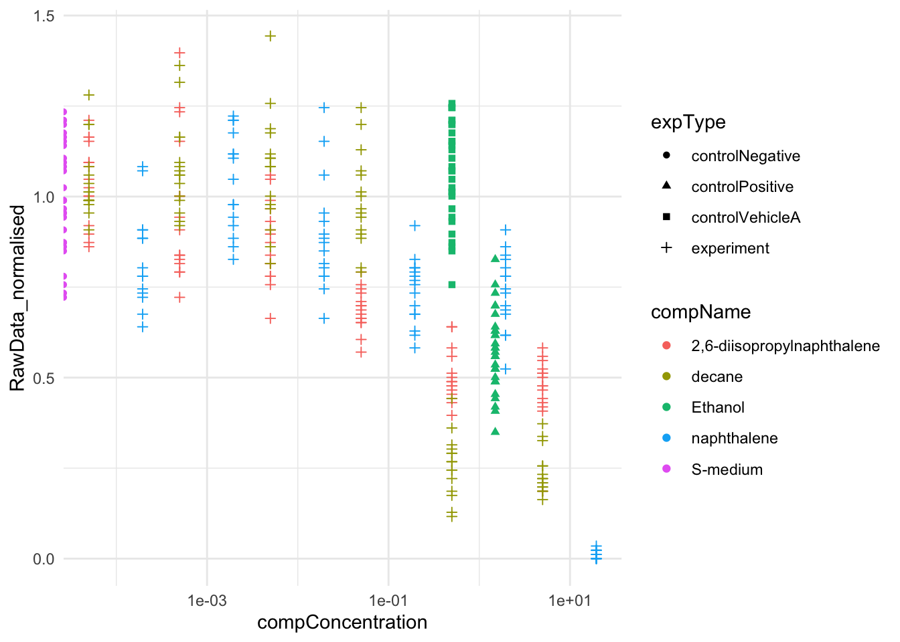

6 Peer review
In dit onderdeel van mijn portfolio onderzoek ik de reproduceerbaarheid van zowel experimentele data als gepubliceerde wetenschappelijke artikelen. Ik presenteer twee opdrachten waarin ik heb geoefend met het analyseren en beoordelen van wetenschappelijke data in R.
6.1 Data analyse van C. elegans blootstelling
Voor deze opdracht was het de bedoeling om de data van een collega laborant te analyseren, afkomstig van het HU lectoraat Innovative Testing in Life Sciences & Chemistry. De data is verkregen door C. elegans bloot te stellen aan verschillende concentraties van diverse chemicaliën. Het doel was om de analyse reproduceerbaar uit te werken in een RMarkdown bestand.
Inlezen van dataset in R
# data inlezen met behulp van readxl package
library(readxl)
data_ce_liq_flow_062 <- read_excel("~/dsfb2_2025_jm/dsfb2_workflows_portfolio_jm/raw_data/CE.LIQ.FLOW.062_Tidydata.xlsx")Controleren van datatype
# controle van datatype en of de data goed is ingelezen
typeof(data_ce_liq_flow_062$RawData) # double## [1] "double"## [1] "character"## [1] "character"De data types zijn als volgt:
- RawData = double
- compName = character
- compConcentration = character
Op basis van de eerder gegeven informatie over de variabelen van de analyse zou ik de volgende aanpassingen maken:
- rawData = integer
- compConcentration = double
De data is over het algemeen goed ingelezen, maar de datatypen hadden beter ingeladen kunnen worden. rawData en compConcentration hebben namelijk het verkeerde datatype.
Data type corrigeren
# data typen corrigeren
data_ce_liq_flow_062$RawData <- as.integer(data_ce_liq_flow_062$RawData)
data_ce_liq_flow_062$compConcentration <- as.double(data_ce_liq_flow_062$compConcentration)
# controle van datatype
typeof(data_ce_liq_flow_062$RawData) # integer## [1] "integer"## [1] "double"Scatterplot maken van data
library(ggplot2)
# scatterplot maken met de aangeleverde data
ggplot(data = data_ce_liq_flow_062, aes(x = compConcentration, y = RawData)) +
geom_point(aes(colour = compName, shape = expType)) +
scale_x_log10() +
geom_jitter(alpha = 0) +
theme_minimal()Scatterplot maken met genormaliseerde data
library(dplyr)
# bepalen van gemiddelde van negatieve controle
mean_negative <- mean(data_ce_liq_flow_062$RawData[data_ce_liq_flow_062$expType == "controlNegative"], na.rm = TRUE)
# normaliseren van ruwe data met gemiddelde van negatieve controle
normaldata_ce_liq_flow_062 <- data_ce_liq_flow_062 |>
mutate(RawData_normalised = RawData / mean_negative)
# scatterplot maken met de genormaliseerde data
ggplot(data = normaldata_ce_liq_flow_062, aes(x = compConcentration, y = RawData_normalised)) +
geom_point(aes(colour = compName, shape = expType)) +
scale_x_log10() +
geom_jitter(alpha = 0) +
theme_minimal()
Analyse reflectie
Voor de analyse is de data ingelezen, geïnspecteerd en gevisualiseerd met scatterplots waarin de concentratie van het chemicalie en het aantal nakomelingen van C. elegans per chemicalie wordt weergegeven.
In dit experiment worden verschillende typen controles gebruik:
controlNegative, oftewel de negatieve controle, is gedaan met S-medium. De negatieve controle is een soort referentiepunt voor de achtergrond van het aantal namekomelingen van C. elegans zonder de aanwezigheid van een chemicalie. De negatieve controle wordt gebruikt om niet specifieke reacties en ruis te identificeren. Hiermee kan je de ruwe data mee corrigeren.
controlPositive, oftewel de positieve controle, is gedaan met ethanol. De positieve controle is behandeling waarvan verwacht wordt dat deze een duidelijke, meetbare respons veroorzaakt. Hiermee kan er aangetoond worden dat C. elegans een respons heeft op de behandeling en instaat is om een respons te genereren en functioneert zoals we verwachten op deze controle.
controlVehicle, oftewel de vehicle controle, is ethanol. Dit is hetzelfde oplosmiddel als gebruikt in de experimentele chemicaliën en in de positieve controle. Deze controle controleert de eventuele effecten van het oplosmiddel en kunnen hierdoor worden onderscheiden van de effecten van de experimentele chemicaliën.
Nut van Normalisatie
Door alle meetwaarden uit te drukken als fractie van de gemiddelde negatieve controlewaarde, worden verschillen die veroorzaakt worden door ruis genormaliseerd. Dit zorgt voor een betere en betrouwbaardere data analyse.
De data is genormaliseerd ten opzichte van de negatieve controle om vergelijkbaarheid tussen condities te verbeteren. Ook hebben we een plan opgesteld voor een dose-response analyse met behulp van het drc package in R.
Stappenplan voor een dose-response analyse met drc package in R
- Installeer en laad drc package.
- Lees de data in en inspecteer de dataset.
- Voorbereiden van dataset.
- Visualiseren van ruwe data.
- Kiezen van het model.
- Selecteer een geschikt dose-response model, bijvoorbeeld een 4-parameter log-logistisch model.
- Model toepassen op de data.
- Bepalen van de IC50-waarde.
- Visualiseren van de dose-response curve.
- Interpreteren van de resultaten.
6.2 Reproduceerbaarheid van wetenschappelijk onderzoek:
In dit onderdeel van mijn portfolio beoordeel ik de reproduceerbaarheid van een wetenschappelijk artikel, waarvan de R code beschikbaar is gesteld.
Introductie van onderzoek
Beoordeling van onderzoek op reproduceerbaarheid
| Criterium | Beoordeling |
|---|---|
| Study Purpose | Ja |
| Data Availability | Ja |
| Data Location | Figshare |
| Study Location | VS |
| Author Review | Instituuts-email |
| Ethics Statement | Ja |
| Funding Statement | Ja |
| Code Availability | Ja (GitHub) |
Zelf de code reproduceren
Bekijk de R code en beschrijf in je eigen woorden wat de R code doet. Beoordeel de leesbaarheid met een cijfer van 1 (= erg slecht) tot 5 (= erg goed).
Download de R code en data en maak een nieuw R project aan om de analyse te herhalen. Probeer minstens 1 figuur te reproduceren. Als je hierbij tegen errors aanloopt, probeer die dan te verbeteren en houd die verbeteringen bij. Beoordeel hierna de reproduceerbaarheid van de R code met een cijfer van 1 (= erg slecht) tot 5 (= erg goed).